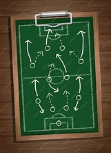

Estadísticas, Goles y Resultados
Información detallada sobre el rendimiento de los equipos y jugadores
Esta página buscamos brindar mayor informacion sobre estadisticas, goles, resultados y diferentes noticias que abarca el deporte.

Metodología utilizada
Recopilamos datos de juego, pases, goles, asistencias con el fin de trasladarlos a informacion entendible por cada lector.